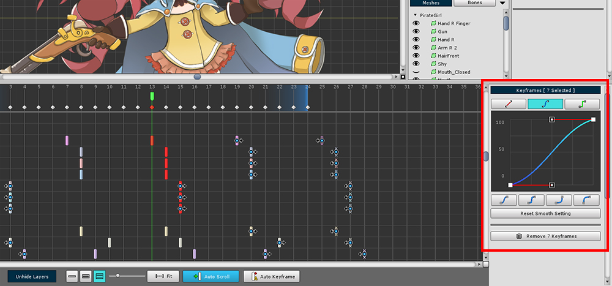

AnyPortrait > マニュアル > 一括的にアニメーションカーブを設定
一括的にアニメーションカーブを設定
1.2.2
キーフレームのアニメーションカーブを調整すると、アニメーションのクオリティを向上させることができます。
しかしながら多くのキーフレームのアニメーションカーブを編集することは非常に面倒な作業です。
このページでは、キーフレームのアニメーションカーブを一度に編集するいくつかの方法を紹介します。
アニメーションカーブを、他のすべてのキーフレームにコピーする

一つのキーフレームを選択した状態で、(1) 「Curveタブ」を選択します。
アニメーションカーブを編集した後、別のキーフレームにカーブの形をコピーすることができます。
(2) 「Copy Curve to All Keyframes」ボタンを押します。
(3) 「現在選択したレイヤーのキーフレームに」にコピーするか、または「すべてのキーフレームの」にコピーするかどうかを選択します。
選択したキーフレームのアニメーションカーブを一括して編集する

(1) 編集したいキーフレームを選択します。
もし選択されたキーフレームのアニメーションカーブの設定が同じでない場合、上記のような画面が表示されます。
(2) 「Reset curves of all selected keyframes」ボタンを押して、アニメーションカーブの設定をリセットします。

選択されたキーフレームのアニメーションカーブが同じに設定された。
今右側の画面でアニメーションカーブを一括で編集するのが可能です。
選択したキーフレームのアニメーションカーブを区別して一括して編集
AnyPortrait v1.2.2から、キーフレームのアニメーションカーブを一括して編集するときに、キーフレームの 「前」と「後」、そして「キーフレームの間」に該当するカーブを区分して、それぞれを編集することができます。

(1) キーフレームを選択してみましょう。

(2) カーブ編集画面の上部に「Prev、Between、Next」の3つのボタンが追加されました。
(3) 「Prevボタン」を押すと、 (4) 選択されたキーフレームの前方に位置するカーブが選択されます。

(1) 「Betweenボタン」を押すと、(2) 連続したキーフレームの間に位置するカーブが選択されます。

(1) 「Nextボタン」を押すと、 (2) 選択されたキーフレームの後ろに位置し、カーブが選択されます。

カーブを区別して選択することができますので、上記のようにエリアに応じて、それぞれ異なってカーブを編集する作業が簡単になりました。

もし選択されたカーブが同じ値を持たなければ、
(1) 紫にカーブエリアが表示されます。
(2) 「Reset curves of all selected keyframesボタン」を押してカーブの値を同じにすることができます。